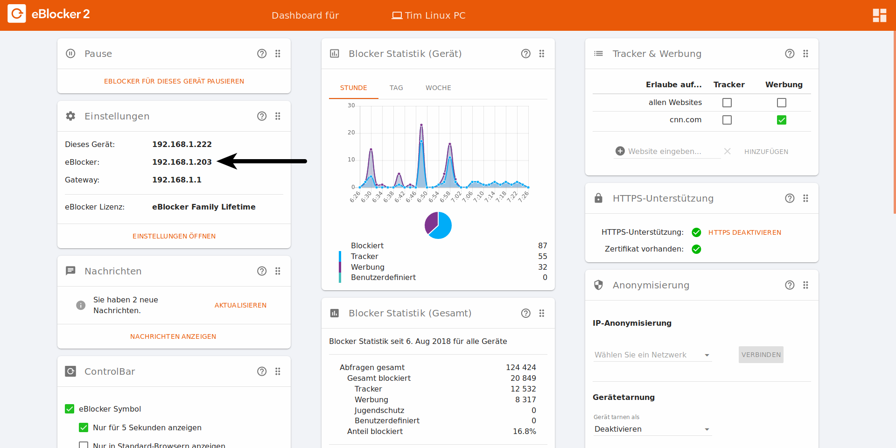

eBlocker Hilfe > FAQs > Netzwerk
Der bequemste Weg um die IP-Adresse Ihres eBlockers zu finden ist auf dem Dashboard, welches Sie im Browser entweder mit setup.eblocker.com, oder eblocker.com aufrufen.
Die IP-Adresse Ihres eBlockers finden Sie dort auf der Karte "Einstellungen" hinter "eBlocker:".

Sie können sich in den Einstellungen Ihres Routers die angeschlossenen Geräte anzeigen lassen. Der eBlocker sollte in dieser Liste der angeschlossenen Geräte als "eblocker" aufgelistet sein.
Windows / macOS / Linux
In einem Terminal (Command Line / CMD), können Sie alle IP-Adressen in Ihrem Netzwerk mit dem Befehl "arp -a" finden. Je nach Betriebssystem kann sich die Anzeige der gefundenen IP-Adressen unterscheiden.
Android / iOS
Auf mobilen Geräten können Sie Ihr Netzwerk mit Apps wie zum Beispiel "he.net Network Tools" scannen.